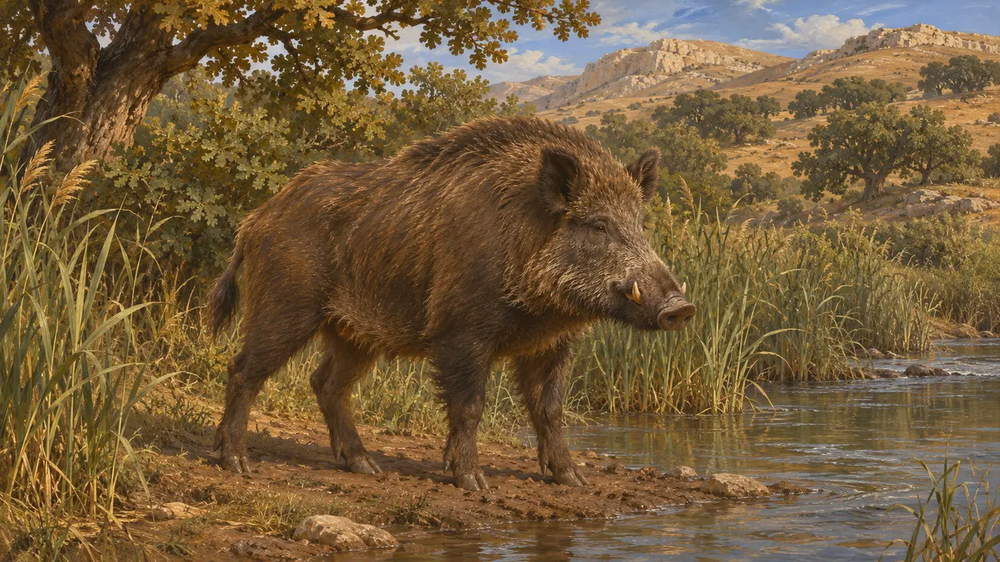
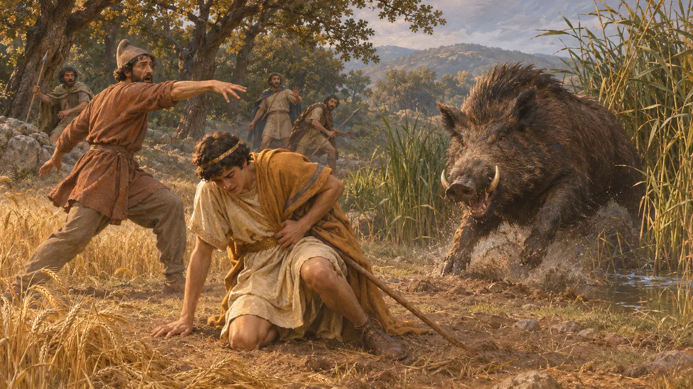
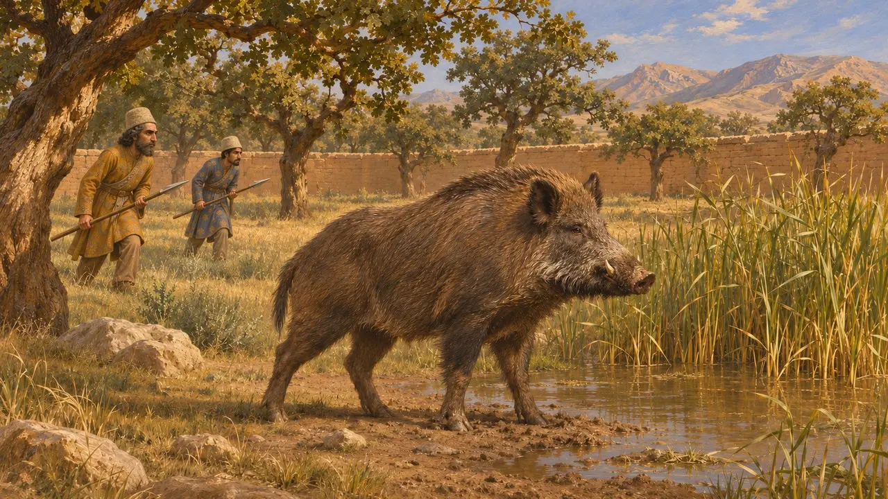
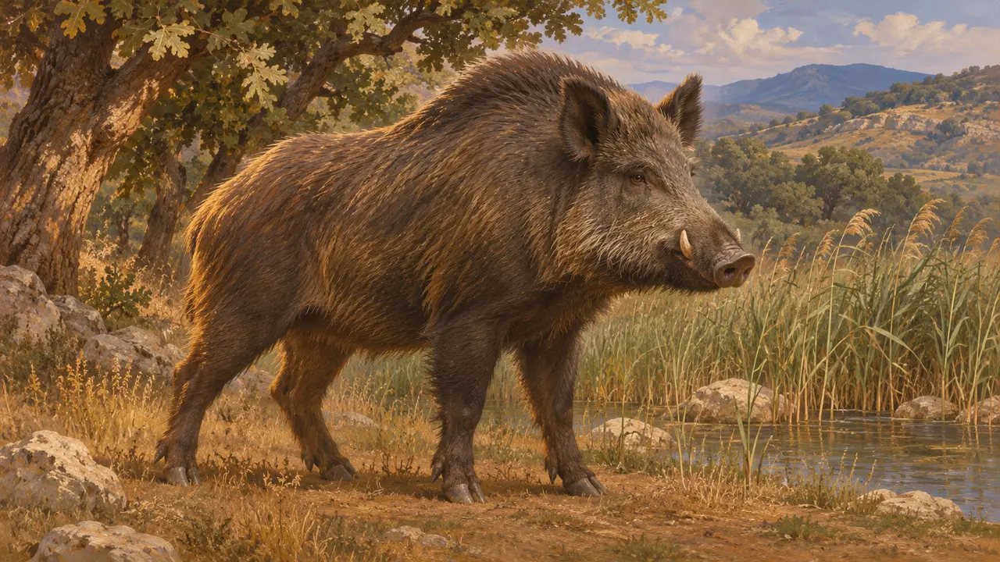
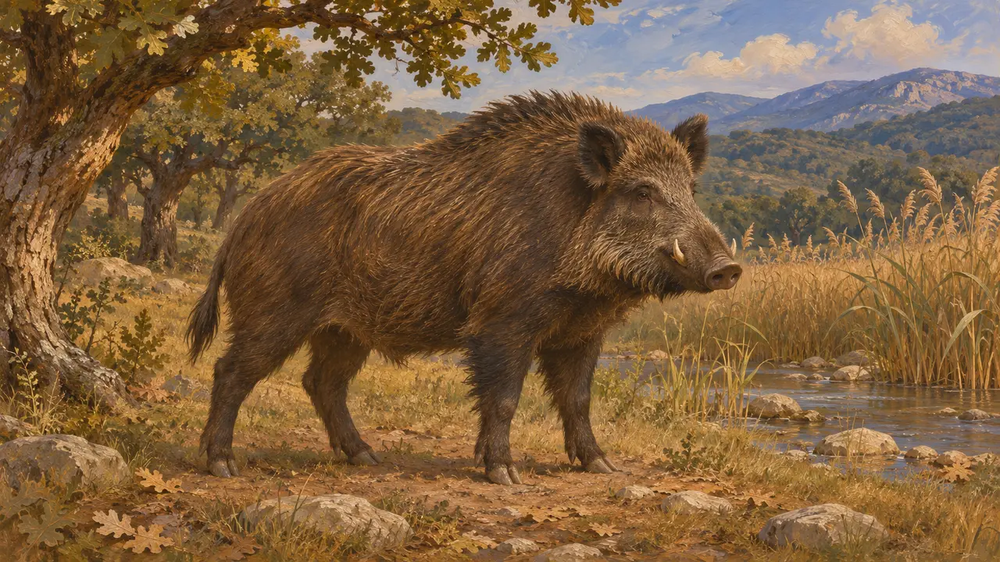

گراز وحشی
خوک وحشی جنگلها، نیزارها و تپهها در آسیا و یونان، سدهٔ ششم تا پنجم پ.م.
در بازی: مرحلهٔ ۳: دروغ، مرحلهٔ ۵: منشور، مرحلهٔ ۶: پل قایقی، مرحلهٔ ۷: سارد میسوزد، مرحلهٔ ۸: خلیج ماراتن، مرحلهٔ ۹: آبراهه، مرحلهٔ ۱۰: دروازههای داغ، مرحلهٔ ۱۱: فرجام
گراز وحشی در بسیاری از چشماندازهایی میزیست که سپاهیان و مقامان پارسی از آن میگذشتند، از بیشههای کنار رود تا جنگلهای بلوط و سرزمینهای تپهماهوری. نویسندگان بازمانده دربارهٔ آن بهعنوان یک جانور کم میگویند. هرودوت آن را در داستانی دربارهٔ سرنوشت به کار میبرد و گزنفون شکار را در شکارگاههای بزرگان پارسی جای میدهد.
در بازی: گراز وحشی در مرحلههای آتوس، بغستان، ایستر، ماراتن، پلاته، سارد، شوش و ترموپیل بهعنوان صحنهپردازی ترسیم شده است. هیچ قاعدهای آن را در نظر نمیگیرد. جایگذاری آن در عیلام، ماد و تراکیه برداشت طراحان از زیستگاه است، نه گزارش هیچ منبعی.

زیستگاه گراز
روایت باستانیهیچ منبع باستانی پراکندگی گراز را برای سالهای بازی فهرست نکرده است. بیشههای مرطوب کنار رودهای دشت، جنگلهای بلوط و سرزمینهای تپهماهوری برای این جانور مناسب بود و از این رو حضور آن در عیلام، ماد و تراکیه از روی زیستگاه استنباط شده است. جای دادن گراز در آن نواحی در بازی یک بازسازی است و منبعی آن را بیان نکرده است.
Herodotus 1.36

گراز در هرودوت
روایت باستانیهرودوت روایت میکند که گرازی عظیم کشتزارهای میسیا را ویران میکرد و میسیاییها از کرزوس یاری خواستند. کرزوس پسرش آتیس را به شکار فرستاد و آدراستوس، تبعیدی فریگیهای، با نیزهای که به سوی گراز پرتاب کرده بود، ناخواسته او را کشت. هرودوت این داستان را سرنوشتی مینمایاند که از راه یک حادثهٔ مرگبار کار خود را میکند.
Herodotus 1.36

شکار در شکارگاههای پارسی
روایت باستانیگزنفون که در سدهٔ چهارم پ.م. مینوشت، شکار نجبای پارسی را در پردیسهای محصور و پر از شکار وصف میکند، و در کوروشنامه کوروش در جوانی در چنین پردیسی شکار میکند. تصویر او از سالهای این بازی متأخرتر و آرمانیشده است، پس نشان میدهد یک یونانی زندگی نخبگان پارسی را چگونه تصور میکرد. گراز در میان شکارهایی است که او در صحنههای شکار نام میبرد.
Xenophon, Cyropaedia

شاه در جایگاه شکارگر
مورد مناقشهشکار در جهان پارسی تصویری شناخته از شاهی بود و پژوهشگران بحث میکنند که هنر شاهی تا چه اندازه شاه را شکارچی، بیشتر شکارچی شیر، نشان میداد. شواهدی که در این سالها گراز را شکار شاهی بنامد اندک است، از این رو جای گراز در آن تصویر روشن نیست.
P. Briant, From Cyrus to Alexander, 2002

جانوران در مسیر لشکرکشی از شمال یونان
روایت باستانیهرودوت میگوید هنگامی که خشایارشا لشکر کشید، شیرها در سرزمین میان نستوس و آخلوس به شترانِ آذوقه حمله بردند و گاوهای وحشی نیز در آنجا میزیستند. او در آن بخش از گراز یادی نمیکند. گوزن و گرازِ تراکیه در بازی از زیستگاه آمدهاند، نه از هرودوت.
Herodotus 7.125-126
منابع
- Herodotus 1.36
- Herodotus 7.125-126
- Xenophon, Cyropaedia
- P. Briant, From Cyrus to Alexander, 2002